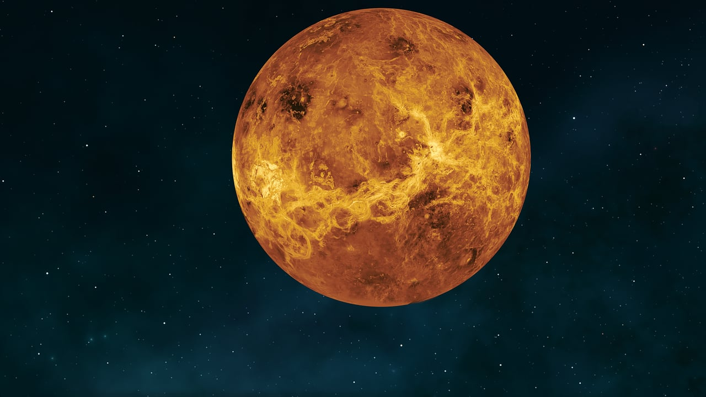

مكونات النظام الشمسي
النظام الشمسي يتكون من الشمس وثمانية كواكب، بالإضافة إلى العديد من الأقمار والكويكبات والمذنبات. في هذه الصفحة، سنستعرض صورة لكوكب عطارد وكوكب الزهرة.

عطارد
أقرب كوكب إلى الشمس.

الزهرة
الكوكب الأكثر حرارة.